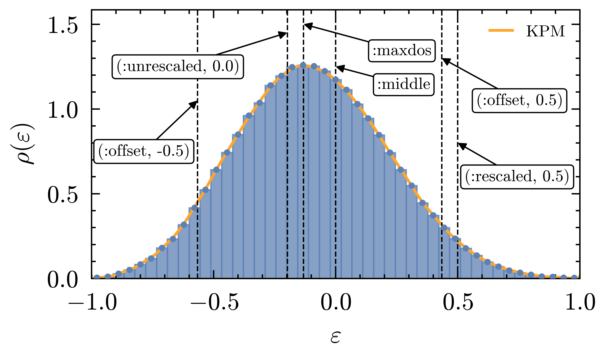

Choosing Target
The target argument of polfed controls where the polynomial filter is centered. This directly changes polynomial order, convergence profile, and runtime.
Rescaled Energy Used Internally
POLFED works in rescaled spectral coordinates:
\[\varepsilon = \frac{E - b}{a}, \quad a = \frac{E_{\max} - E_{\min}}{2}, \quad b = \frac{E_{\max} + E_{\min}}{2}.\]
So the minimal and maximal eigenvalues map to -1 and +1, respectively. We denote the rescaled energy at maximal density of states by $\varepsilon_{\mathrm{maxdos}}$.
Target Modes
target = :maxdosTargets $\varepsilon_{\mathrm{maxdos}}$, the rescaled energy where DoS is maximal.target = :middleTargets the center of the unrescaled spectrum $E_{\mathrm{mid}} = (E_{\max}+E_{\min})/2$. In rescaled units this is exactly $\varepsilon = 0$, so this is equivalent totarget = (:rescaled, 0.0).target = (:offset, eta)Offsets from $\varepsilon_{\mathrm{maxdos}}$ toward either edge of the rescaled spectrum.eta=0gives $\varepsilon_{\mathrm{maxdos}}$,eta=1gives+1, andeta=-1gives-1, there is linear interpolation in between.
\[\varepsilon_{\mathrm{target}} = \begin{cases} \varepsilon_{\mathrm{maxdos}} + \eta\cdot(1-\varepsilon_{\mathrm{maxdos}}), & 0 \le \eta \le 1, \\ \varepsilon_{\mathrm{maxdos}} + \eta\cdot(1+\varepsilon_{\mathrm{maxdos}}), & -1 \le \eta < 0, \end{cases} \quad \eta \in [-1,1].\]
target = E::Realortarget = (:unrescaled, E)InterpretsEas unrescaled energy and internally converts it using the rescaling defined above.target = (:rescaled, eps)Uses the already rescaled energy directly.
Example Sweep
using Polfed
using Polfed.Models: qsun_hamiltonian
using LinearAlgebra
L_loc = 12
L_grain = 2
g0 = 1.0
α = 0.5
mat = qsun_hamiltonian(L_loc, L_grain, g0, α; use_sparse=true)
x0 = rand(size(mat,1)); x0 ./= norm(x0)
howmany = 80
targets = (
0., # Same as (:unrescaled, 0.0)
:maxdos,
:middle,
(:offset, 0.5),
(:offset, -0.5),
(:unrescaled, 0.0),
(:rescaled, 0.5),
)
for t in targets
vals, vecs = polfed(mat, x0, howmany, t)
endYou can see what part of the spectrum the examples above target. :maxdos really targets the maximal density of states, obtained with the kernel polynomial method. :middle targets the middle of the rescaled spectrum, so it is the same as (:rescaled, 0.0). Likewise, 0.0 and (:unrescaled, 0.0) point to the same target after internal rescaling. A key detail is that (:rescaled, 0.5) and (:offset, 0.5) are not the same: :rescaled is measured from the center of the spectrum, while :offset is measured from $\varepsilon_{\mathrm{maxdos}}$ toward the right/left edge.

Calulating Denseties of States
To determine :maxdos and reference points for (:offset, eta), POLFED estimates a kernel-smoothed density of states (DoS) with the kernel polynomial method (KPM) and stochastic trace evaluation. The related configuration is DoSConfig.
In rescaled coordinates $\varepsilon \in [-1,1]$, KPM approximates DoS as
\[\rho_{\mathrm{KPM}}(\varepsilon)= \frac{1}{\pi\sqrt{1-\varepsilon^2}} \left[\mu_0 g_0 + 2\sum_{n=1}^{N-1}\mu_n g_n T_n(\varepsilon)\right],\]
where $T_n$ are Chebyshev polynomials, $\mu_n$ are moments, and $g_n$ are kernel factors (for damping Gibbs oscillations). The moments are traces of Chebyshev polynomials of the rescaled Hamiltonian:
\[\mu_n = \mathrm{Tr}\!\left[T_n(\tilde H)\right] \approx \frac{1}{R}\sum_{r=1}^{R}\langle r|T_n(\tilde H)|r\rangle.\]
In practice, two parameters control the quality of DoS:
N(number of moments): higherNgives finer spectral resolution, usually revealing more peaks and shifting the numerically detected DoS maximum.R(number of random vectors): higherRimproves stochastic averaging, reduces noise, and stabilizes the detected peak location.
Because :maxdos uses the peak of this estimated DoS, changing N and R can slightly change the selected target. Use reporting (produce_report) while tuning these settings, and see the next section Reporting.
This page was generated using Literate.jl.